7 Visualizar datos
WHY Data visualization matters: https://www.autodeskresearch.com/publications/samestats
7.1 Other resources
- http://chartmaker.visualisingdata.com/
- https://www.r-graph-gallery.com/
- http://pythonplot.com/ (see ggplot tab in plots)
- https://xeno.graphics/
R es un lenguaje especialmente potente para la visualización de datos. Librerias como ggplot2 permiten una cantidad abrumadora de opciones. Aqui presentamos ejemplos de algunas de las posibilidades de R.
7.2 Que gráfica puedo usar (WIP)

- Image FROM Modern Dive
| DV/IV | IV continua | IV vategórica | IV dicotómica |
|---|---|---|---|
| DV continua | SCATTER PIRATE CORREL | PIRATE CAJA | BEAN DENSITY PIRATE |
| DV categórica | … | PIRATE | … |
| DV dicotómica | … | … | … |
Vamos a usar la siguiente base de datos.
- Cargamos librerias y leemos datos
# Cargamos librerias
if (!require('readr')) install.packages('readr'); library('readr')
if (!require('dplyr')) install.packages('dplyr'); library('dplyr')
if (!require('yarrr')) install.packages('yarrr'); library('yarrr')
if (!require('DT')) install.packages('DT'); library('DT')
if (!require('ggplot2')) install.packages('ggplot2'); library('ggplot2')
# Leemos datos y echamos un vistazo usando el paquete DT::datatable()
datos = read_csv("Data/06_Visualize_data/Visualize_data.csv"); DT::datatable(datos) # A algunas de las funciones no les gustan las tibbles!
datos_no_tibble = read.csv("Data/06_Visualize_data/Visualize_data.csv") - Nota sobre sintaxis
En muchos de los gráficos, análisis estadísticos, etc, usaremos la sintaxis: Var_Dep ~ Var_Indep_1 + Var_Indep_2
7.3 Tipos de gráficas
7.3.1 Histogramas
La función hist() nos permite crear de manera muy sencilla histogramas para ver
# Histograma sencillo
hist(datos$Edad)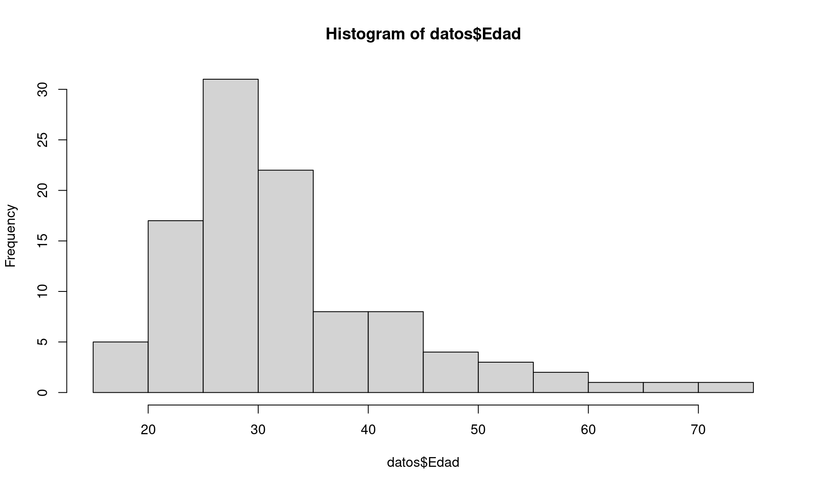
# Dotplot histogram
qplot(datos$Edad,
geom="dotplot",
fill = I("forestgreen"),
xlab = "Age",
main = "Age dotplot histogram") +
theme_minimal()## `stat_bindot()` using `bins = 30`. Pick better value with `binwidth`.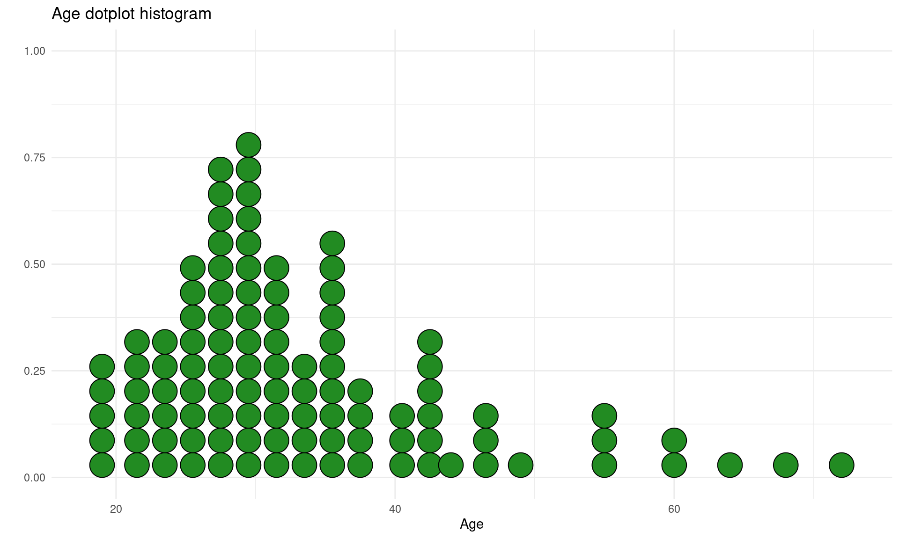
# Y axis shows the proper number
max_bins = datos %>% group_by(Edad) %>% dplyr::summarise(N = n()) %>% arrange(desc(N))#distinct(N) %>% filter(N == max(N))
ggplot(datos, aes(Edad)) +
geom_dotplot(binwidth = 1, fill = "forestgreen") +
coord_fixed(ratio=1) +
ylim(0, max_bins$N[1] * 1.5) +
theme_minimal() Si queremos ver los histogramas de todas las variables numéricas de nuestro dataset:
# Metodo 1
if (!require('psych')) install.packages('psych'); library('psych')
#plyr
# multi.hist(datos) #error, not numeric
multi.hist(datos[,sapply(datos, is.numeric)])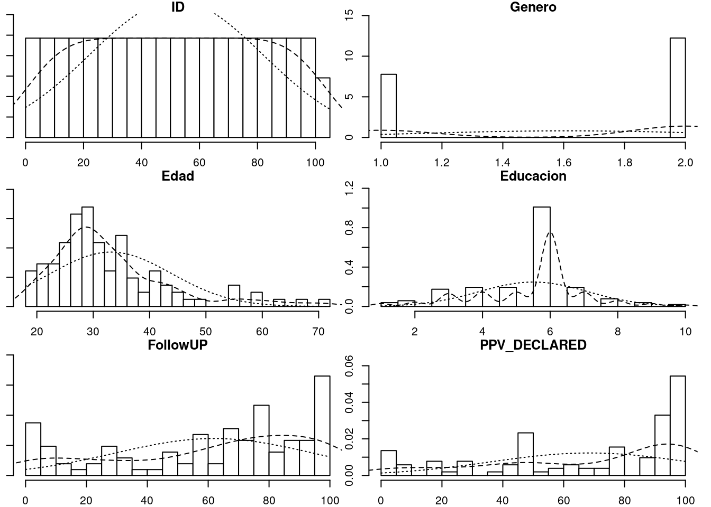
# Metodo 2
if (!require('ggplot2')) install.packages('ggplot2'); library('ggplot2')
if (!require('reshape2')) install.packages('reshape2'); library('reshape2')
d <- melt(datos)## Warning in melt(datos): The melt generic in data.table has been passed a
## spec_tbl_df and will attempt to redirect to the relevant reshape2 method;
## please note that reshape2 is deprecated, and this redirection is now
## deprecated as well. To continue using melt methods from reshape2 while both
## libraries are attached, e.g. melt.list, you can prepend the namespace like
## reshape2::melt(datos). In the next version, this warning will become an error.## Using condition as id variablesggplot(d,aes(x = value)) +
facet_wrap(~variable,scales = "free_x") +
geom_histogram(bins = 15) #+ coord_cartesian(ylim = c(0, 100))7.3.2 Pirate plot
Ver la web del creador: Pirate plot y su página de Github
# Cargamos librerias
if (!require('yarrr')) install.packages('yarrr'); library('yarrr')
# Mostramos gráfico con opciones por defecto
pirateplot(formula = PPV_DECLARED ~ condition, datos)# Personalizamos el gráfico
pirateplot(formula = PPV_DECLARED ~ condition,
data = datos,
main = "PPV by condition",
avg.line.fun = median,
#theme.o = 2,
jitter.val = .2,
inf.method = "ci", #Show confidence interval (95%)
inf.f.o = 0.2, #Opacity of ci
pal = "appletv")7.3.3 Barplots with individual responses
# https://mvuorre.github.io/post/2017/within-subject-scatter/
barplot <- ggplot(datos, aes(x = condition, y = PPV_DECLARED, color = condition)) +
stat_summary( geom = "bar",
fun.y = "mean",
# col = "black",
fill = "gray70",
alpha = .6 ) +
geom_point(position = position_jitter(h = 0, w = 0.5)) +
scale_y_continuous(limits = c(0, 100),
expand = c(0, 0))## Warning: `fun.y` is deprecated. Use `fun` instead.barplot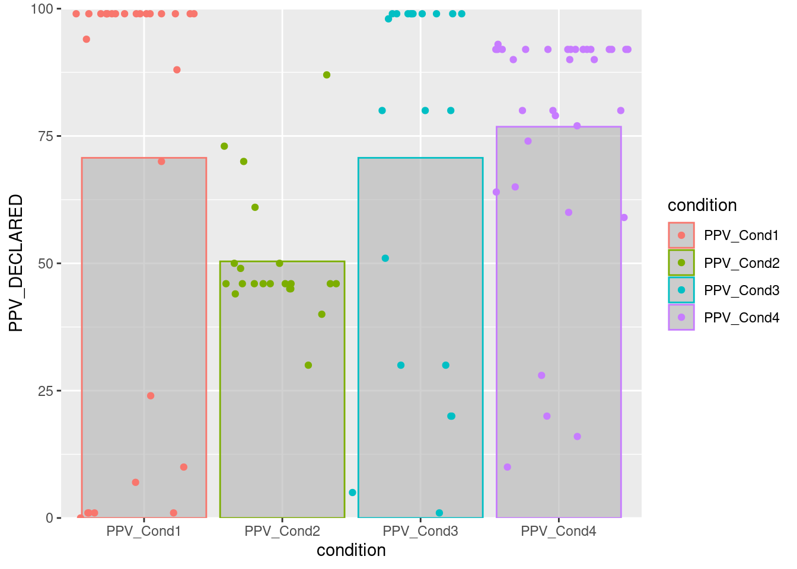
# Adding more geoms
barplot2 <- ggplot(datos, aes(x = condition, y = PPV_DECLARED, color = condition)) +
stat_summary( geom = "bar",
fun.y = "mean",
# col = "black",
fill = "gray70",
alpha = .6 ) +
# stat_summary(fun.data = mean_se, geom = "errorbar") +
geom_point(position = position_jitter(h = 0, w = 0.5)) +
geom_boxplot(alpha = .2, outlier.alpha = .1) +
geom_dotplot(binaxis ="y", stackdir = "center", binwidth = 2) +
geom_violin(alpha = .2) +
scale_y_continuous(limits = c(0, 100),
expand = c(0, 0))## Warning: `fun.y` is deprecated. Use `fun` instead.barplot2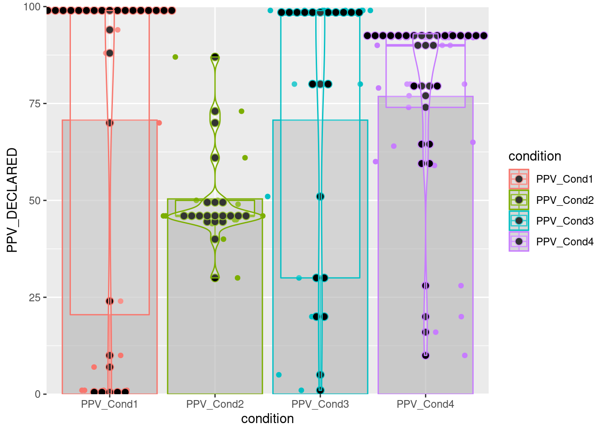
7.3.4 Diagrama de caja y bigotes
boxplot(PPV_DECLARED ~ condition, datos)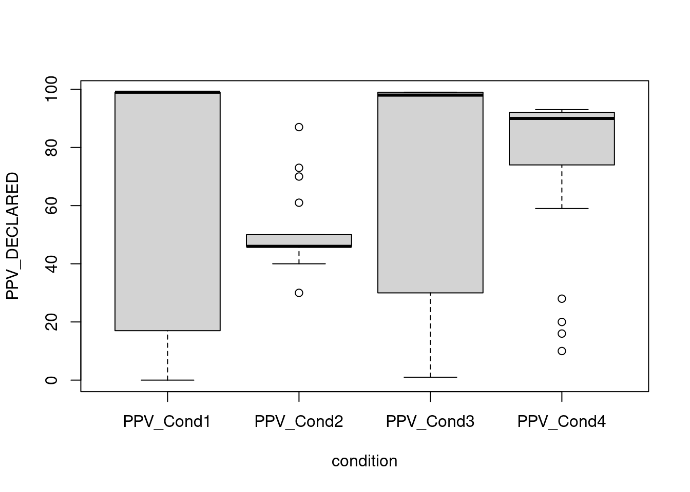
7.3.5 Correlation plot
Ver la web del paquete: Correlation plot y su página de Github
# Cargamos libreria
if (!require('corrplot')) install.packages('corrplot'); library('corrplot')
corrplot(cor(datos[,c(2:5,7)]), mar = c(1,0, 0, 0),tl.cex = 0.9,
method = "square", type = "lower", tl.col = "black", diag = T)# Correlation with ggplot
# From http://r-statistics.co/Top50-Ggplot2-Visualizations-MasterList-R-Code.html
if (!require('ggplot2')) install.packages('ggplot2'); library('ggplot2')
if (!require('ggcorrplot')) install.packages('ggcorrplot'); library('ggcorrplot')
corr = round(cor(datos[,c(2:5,7)]), 1)
# Plot
ggcorrplot(corr, hc.order = TRUE,
type = "lower",
lab = TRUE,
lab_size = 3,
method="circle",
colors = c("tomato2", "white", "springgreen3"),
title="Correlogram",
ggtheme=theme_bw)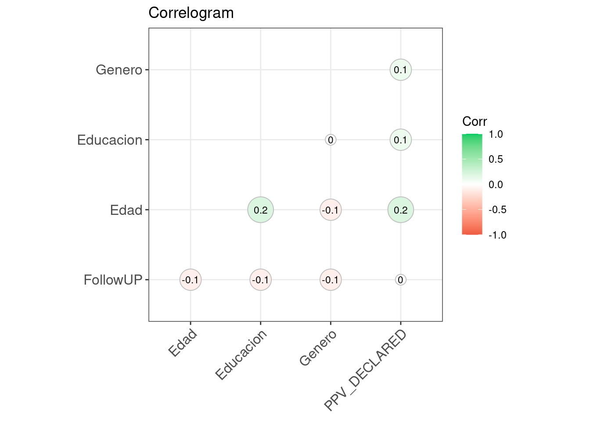
7.3.6 Beanplot
Ver la web del paquete Beanplot
# Cargamos libreria
if (!require('beanplot')) install.packages('beanplot'); library('beanplot')
beanplot(FollowUP ~ Genero, data = datos, side = "both", log = "", names = c("Hombre","Mujer"),
what = c(1,1,1,0), border = NA, col = list("black", c("grey", "white")))# legend("bottomleft", fill = c("black", "grey"), legend = c("H", "M"), title = "Genero")7.3.7 Scatterplot
Ver la web del creador: ggpubr y su página de Github
# Cargamos libreria
if (!require('ggpubr')) install.packages('ggpubr'); library('ggpubr')
ggscatter(datos_no_tibble, x = "Educacion", y = "Edad",
color = "black", shape = 21, size = 4, # Points color, shape and size
add = "reg.line", # Add regressin line
add.params = list(color = "blue", fill = "lightgray"), # Customize reg. line
conf.int = TRUE, # Add confidence interval
cor.coef = TRUE # Add correlation coefficient
)## `geom_smooth()` using formula 'y ~ x'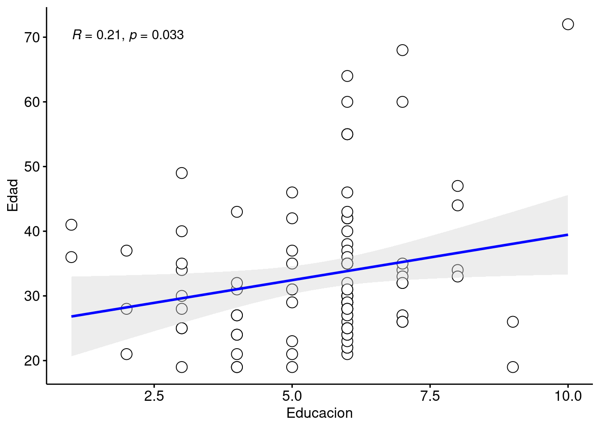
7.3.8 Scatterplot con 3 variables
Ver la web de documentación de ggplot2 y su página de Github
# Cargamos libreria
if (!require('dplyr')) install.packages('dplyr'); library('dplyr')
if (!require('ggplot2')) install.packages('ggplot2'); library('ggplot2')
ggplot(datos, aes(PPV_DECLARED, FollowUP, color=factor(Genero))) +
geom_point(shape=1, size = 2) +
scale_colour_hue(l=50) + # Palette hue
geom_smooth(method=lm, # Linear regression lines
se=T, # Confidence interval
fullrange=F) # Extend regression lines## `geom_smooth()` using formula 'y ~ x'
7.3.9 Density plots
Ver la web del creador: ggpubr y su página de Github
- The variable we use to create two different sub-plots has to be a factor!
if (!require('readr')) install.packages('readr'); library('readr')
if (!require('dplyr')) install.packages('dplyr'); library('dplyr')
if (!require('ggpubr')) install.packages('ggpubr'); library('ggpubr')
if (!require('ggplot2')) install.packages('ggplot2'); library('ggplot2')
datos = read_csv("Data/06_Visualize_data/Visualize_data.csv")##
## ── Column specification ────────────────────────────────────────────────────────
## cols(
## ID = col_double(),
## Genero = col_double(),
## Edad = col_double(),
## Educacion = col_double(),
## FollowUP = col_double(),
## condition = col_character(),
## PPV_DECLARED = col_double()
## )datos = datos %>%
mutate(Genero = as.factor(unlist(Genero))) %>% #Make Genero a factor
mutate(PPV_DECLARED = as.numeric(unlist(PPV_DECLARED)))
ggdensity(datos, x = "PPV_DECLARED",
add = "mean", rug = TRUE,
color = "Genero", palette = c("#00AFBB", "#E7B800"), fill = "Genero")7.3.10 Density Ridges Plots (ggjoy)
if (!require('dplyr')) install.packages('dplyr'); library('dplyr')
if (!require('ggridges')) install.packages('ggridges'); library('ggridges')
if (!require('ggplot2')) install.packages('ggplot2'); library('ggplot2')
datos_density_ridges = datos %>% drop_na() %>%
filter(Educacion < 8) %>%
mutate(Educacion = as.factor(Educacion)) %>%
mutate(PPV_DECLARED = as.double(PPV_DECLARED))
# datos_density_ridges %>% group_by(Genero) %>% dplyr::summarise(N = n())
# Simple version
ggplot(datos_density_ridges, aes(x = FollowUP, y = Genero)) +
geom_density_ridges(scale = 2)## Picking joint bandwidth of 12.4# Tweak some aesthetics
ggplot(datos_density_ridges, aes(x = FollowUP, y = Genero, fill = Genero)) +
geom_density_ridges(scale = 2, alpha = .7, color = "white") +
scale_fill_hue(l=30)## Picking joint bandwidth of 12.4# Histogram stat
ggplot(datos_density_ridges, aes(x = FollowUP, y = Genero, fill = Genero)) +
geom_density_ridges(scale = 2, alpha = .7, color = "white", stat = "binline", bins = 20) +
scale_fill_hue(l=30)
# Combined
ggplot(datos_density_ridges, aes(x = FollowUP, y = Genero, fill = Genero)) +
geom_density_ridges(scale = 2, alpha = .7, color = "white", stat = "binline", bins = 20) +
geom_density_ridges(scale = 2, alpha = .4, color = "white") +
scale_fill_hue(l=30)## Picking joint bandwidth of 12.4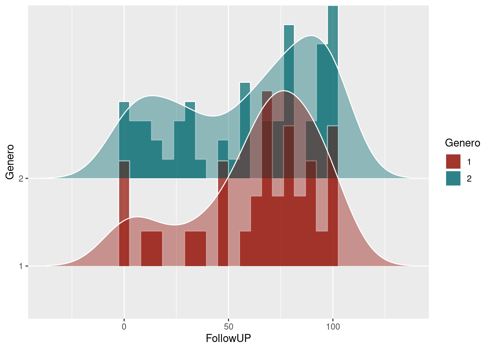
7.3.11 PP plots
Plots of distributional differences… See http://www.dandersondata.com/post/esvis-part-1/
if (!require('esvis')) devtools::install_github("DJAnderson07/esvis"); library('esvis')
pp_plot(benchmarks, reading ~ frl)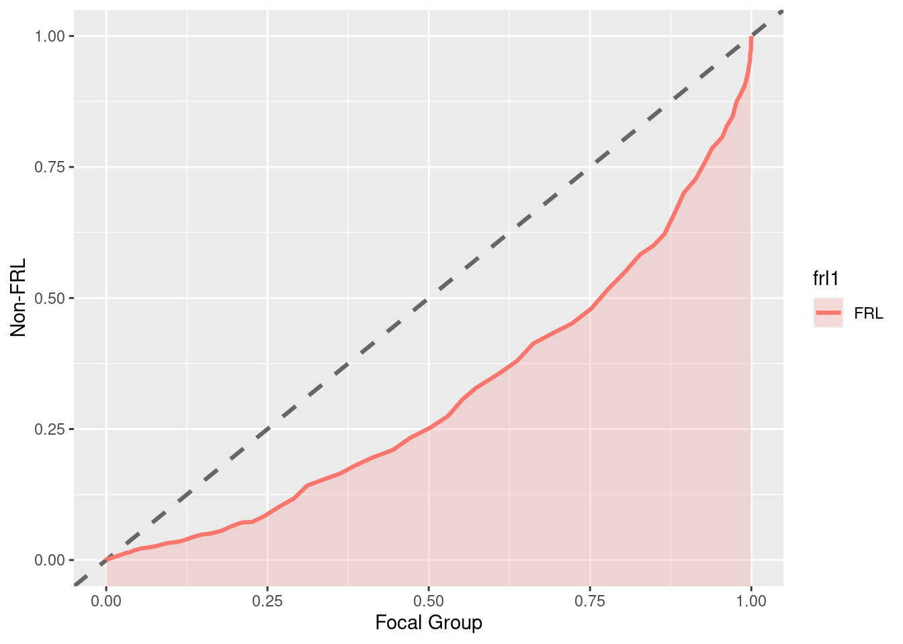
pp_plot(benchmarks, reading ~ ell, ref_group = "Non-ELL")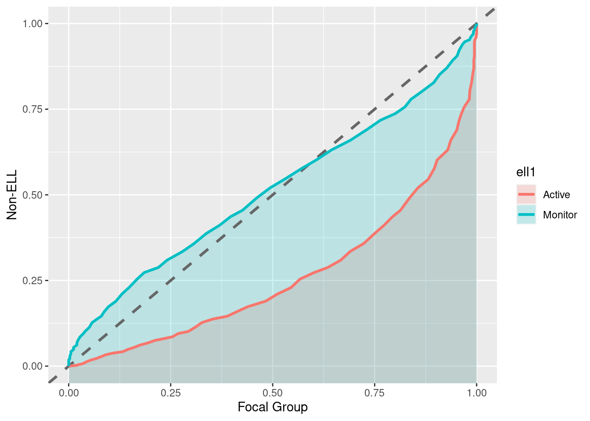
“Notice in this plot there is actually a reversal of the effect for monitor students. On the lower end of the scale, Monitor students are actually out-performing non-ELL students, but this effect reverses at the top of the scale. A summary measure would not provide this type of information, but it may be incredibly valuable for theory development. For example, for this finding we may theorize that students with very low achievement receive a benefit from essentially any additional attention, even if that attention is not directly related to academics.”(http://www.dandersondata.com/post/esvis-part-1/)
For the sake of comparison, here are the distributions plotted with geom_density_ridges:
ggplot(benchmarks, aes(x = reading, y = ell, fill = ell)) +
geom_density_ridges(scale = 2, alpha = .7, color = "white", stat = "binline", bins = 20) +
geom_density_ridges(scale = 2, alpha = .4, color = "white") +
scale_fill_hue(l=30)7.3.12 Shaded geom area
FROM @kara_woo: https://gist.github.com/karawoo/14f4f46da900b09997d26171d092fb92
if (!require('readr')) install.packages('readr'); library('readr')
if (!require('dplyr')) install.packages('dplyr'); library('dplyr')
if (!require('ggplot2')) install.packages('ggplot2'); library('ggplot2')
data_for_plot = read_csv("Data/06_Visualize_data/data_shaded_geom_area.csv")
# Deaths by cause
p_area <- ggplot(data_for_plot, aes(x=year, y=count, group=cat, order=cat)) +
geom_area(aes(fill=cat), position='stack') +
theme_minimal()
p_area## Calculate total deaths by year
dat <- data_for_plot %>%
group_by(year) %>%
mutate(total = sum(count))
ggplot(dat, aes(x = year, y = count, group = cat, order = cat, fill = cat)) +
geom_area(data = dat, aes(y = total), fill = "grey", alpha = .5, position = 'stack') +
geom_area(position = 'stack') + #colour = "black",
facet_wrap(~ cat) +
guides(fill = FALSE) + # to remove the legend
theme_minimal() # for clean look overall
#
#
#
# ## Colors I chose
# mycolors <- c("#00bf7b", "#59004d", "#ffcb89", "#a76e61", "#ac270d", "#7890ff",
# "#6ca013", "#c2e05e", "#00300d", "#ff7b90")
#
#
# ## Plot as small multiples
# #** BUG: If we run the code for this plot in bookdown after loading packages plyr, Rmisc, the y axis gets mangled.**
# p_small_mult <- ggplot(dat, aes(x = year)) +
# ## Gray background showing total
# geom_area(aes(y = total), fill = "grey80", alpha = 0.7) +
# ## Individual areas for each category
# geom_area(aes(y = count, fill = cat)) +
# facet_wrap(~ cat, nrow = 2) +
# ## Further customization
# scale_fill_manual(values = mycolors) +
# scale_y_continuous(limits = c(0, max(dat$total) + 5), expand = c(0, 0)) +
# theme_minimal() +
# theme(
# legend.position = "none",
# axis.text = element_text(size = 7)
# ) +
# labs(
# y = "Total deaths",
# x = "Year",
# title = "On-duty police officer deaths",
# subtitle = "Data: https://github.com/fivethirtyeight/data/police-deaths"
# )
# p_small_mult7.3.13 Multiple Scatterplots
if (!require('readr')) install.packages('readr'); library('readr')
if (!require('dplyr')) install.packages('dplyr'); library('dplyr')
if (!require('ggplot2')) install.packages('ggplot2'); library('ggplot2')
if (!require('ggthemes')) install.packages('ggthemes'); library('ggthemes')
if (!require('Rmisc')) install.packages('Rmisc'); library('Rmisc')
a = read_csv("Data/06_Visualize_data/data_multiple_scatterplot.csv")##
## ── Column specification ────────────────────────────────────────────────────────
## cols(
## ID = col_double(),
## `Executive functions` = col_double(),
## `Emotional recognition` = col_double(),
## ToM = col_double(),
## `Inhibitory verbal control` = col_double(),
## `Cryst.Intellig.1 (vocab.)` = col_double(),
## `Cryst. Intellig.2 (years of studies)` = col_double(),
## `Fluid intelligence` = col_double(),
## `Social adaptation` = col_double(),
## Age = col_double()
## )# Si se cambia alguno de estos nombres, cambiar tb abajo (o mejor, find and replace all!)
colnames(a) = c("a", "Executive functions", "Emotional recognition", "ToM", "Inhibitory verbal control", "Cryst. Intellig. (vocab)", "Cryst. Intellig. (years of education)", "Fluid intelligence", "w", "gg")
p1 = ggplot(a, aes(x = `Cryst. Intellig. (vocab)`, y = `Executive functions`)) + geom_point(shape=16, fill="darkgrey", color="black", size=2) +
geom_smooth(method=lm, fill="grey", color="black", se = F, size = .5) + theme_tufte() + theme(axis.title.x=element_blank())
p2 = ggplot(a, aes(x = `Cryst. Intellig. (vocab)`, y = `Emotional recognition`)) + geom_point(shape=16, fill="darkgrey", color="black", size=2) +
geom_smooth(method=lm, fill="grey", color="black", se = F, size = .5) + theme_tufte() + theme(axis.title.x=element_blank())
p3 = ggplot(a, aes(x = `Cryst. Intellig. (vocab)`, y = ToM)) + geom_point(shape=16, fill="darkgrey", color="black", size=2) +
geom_smooth(method=lm, fill="grey", color="black", se = F, size = .5) + theme_tufte() + theme(axis.title.x=element_blank())
p4 = ggplot(a, aes(x = `Cryst. Intellig. (vocab)`, y = `Inhibitory verbal control`)) + geom_point(shape=16, fill="darkgrey", color="black", size=2) +
geom_smooth(method=lm, fill="grey", color="black", se = F, size = .5) + theme_tufte()
p5 = ggplot(a, aes(x = `Cryst. Intellig. (years of education)`, y = `Executive functions`)) + geom_point(shape=16, fill="darkgrey", color="black", size=2) +
geom_smooth(method=lm, fill="grey", color="black", se = F, size = .5) + theme_tufte() + theme(axis.title.x=element_blank(), axis.title.y=element_blank())
p6 = ggplot(a, aes(x = `Cryst. Intellig. (years of education)`, y = `Emotional recognition`)) + geom_point(shape=16, fill="darkgrey", color="black", size=2) +
geom_smooth(method=lm, fill="grey", color="black", se = F, size = .5) + theme_tufte() + theme(axis.title.x=element_blank(), axis.title.y=element_blank())
p7 = ggplot(a, aes(x = `Cryst. Intellig. (years of education)`, y = ToM)) + geom_point(shape=16, fill="darkgrey", color="black", size=2) +
geom_smooth(method=lm, fill="grey", color="black", se = F, size = .5) + theme_tufte() + theme(axis.title.x=element_blank(), axis.title.y=element_blank())
p8 = ggplot(a, aes(x = `Cryst. Intellig. (years of education)`, y = `Inhibitory verbal control`)) + geom_point(shape=16, fill="darkgrey", color="black", size=2) +
geom_smooth(method=lm, fill="grey", color="black", se = F, size = .5) + theme_tufte() + theme(axis.title.y=element_blank())
p9 = ggplot(a, aes(x = `Fluid intelligence`, y = `Executive functions`)) + geom_point(shape=16, fill="darkgrey", color="black", size=2) +
geom_smooth(method=lm, fill="grey", color="black", se = F, size = .5) + theme_tufte() + theme(axis.title.x=element_blank(), axis.title.y=element_blank())
p10 = ggplot(a, aes(x = `Fluid intelligence`, y = `Emotional recognition`)) + geom_point(shape=16, fill="darkgrey", color="black", size=2) +
geom_smooth(method=lm, fill="grey", color="black", se = F, size = .5) + theme_tufte() + theme(axis.title.x=element_blank(), axis.title.y=element_blank())
p11 = ggplot(a, aes(x = `Fluid intelligence`, y = ToM)) + geom_point(shape=16, fill="darkgrey", color="black", size=2) +
geom_smooth(method=lm, fill="grey", color="black", se = F, size = .5) + theme_tufte() + theme(axis.title.x=element_blank(), axis.title.y=element_blank())
p12 = ggplot(a, aes(x = `Fluid intelligence`, y = `Inhibitory verbal control`)) + geom_point(shape=16, fill="darkgrey", color="black", size=2) +
geom_smooth(method=lm, fill="grey", color="black", se = F, size = .5) + theme_tufte() + theme(axis.title.y=element_blank())
multiplot(p1, p2, p3, p4, p5, p6, p7, p8, p9, p10, p11, p12, cols=3)## `geom_smooth()` using formula 'y ~ x'## `geom_smooth()` using formula 'y ~ x'
## `geom_smooth()` using formula 'y ~ x'
## `geom_smooth()` using formula 'y ~ x'
## `geom_smooth()` using formula 'y ~ x'
## `geom_smooth()` using formula 'y ~ x'
## `geom_smooth()` using formula 'y ~ x'
## `geom_smooth()` using formula 'y ~ x'
## `geom_smooth()` using formula 'y ~ x'
## `geom_smooth()` using formula 'y ~ x'
## `geom_smooth()` using formula 'y ~ x'
## `geom_smooth()` using formula 'y ~ x'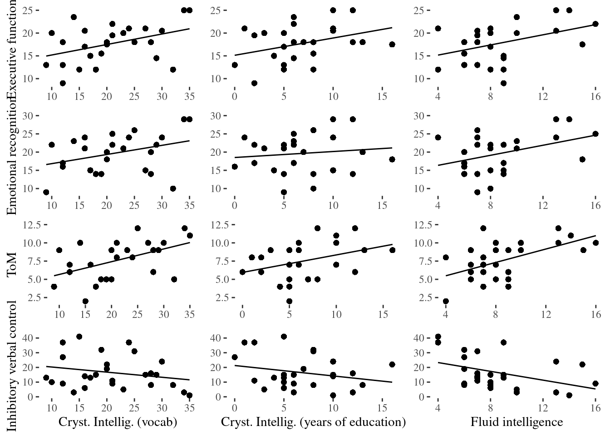
Using ggforce:
if (!require('ggplot2')) install.packages('ggplot2'); library('ggplot2')
if (!require('ggforce')) install.packages('ggforce'); library('ggforce')## Loading required package: ggforceggplot(a, aes(x = .panel_x, y = .panel_y)) +
geom_point(shape=16, fill="darkgrey", color="black", size=2, position = 'auto') +
geom_smooth(method=lm, fill="grey", color="black", se = F, size = .5) +
theme_tufte() +
theme(axis.title.x=element_blank(), axis.title.y=element_blank()) +
facet_matrix(vars(`Executive functions`, `Emotional recognition`, ToM, `Inhibitory verbal control`), vars(`Cryst. Intellig. (vocab)`, `Cryst. Intellig. (years of education)`, `Fluid intelligence`))## Warning in rows == cols: longer object length is not a multiple of shorter
## object length## `geom_smooth()` using formula 'y ~ x'## Warning: Removed 3 rows containing non-finite values (stat_smooth).## Warning: Removed 3 rows containing missing values (geom_point).7.3.14 Background data
FROM: https://drsimonj.svbtle.com/plotting-background-data-for-groups-with-ggplot2
if (!require('readr')) install.packages('readr'); library('readr')
if (!require('dplyr')) install.packages('dplyr'); library('dplyr')
if (!require('ggplot2')) install.packages('ggplot2'); library('ggplot2')
d <- iris # Full data set
d_bg <- d[, -5] # Background Data - full without the 5th column (Species)
ggplot(d, aes(x = Sepal.Width, fill = Species)) +
geom_histogram(data = d_bg, fill = "grey", alpha = .5) +
geom_histogram(colour = "black") +
facet_wrap(~ Species) +
guides(fill = FALSE) + # to remove the legend
theme_bw() # for clean look overall## `stat_bin()` using `bins = 30`. Pick better value with `binwidth`.
## `stat_bin()` using `bins = 30`. Pick better value with `binwidth`.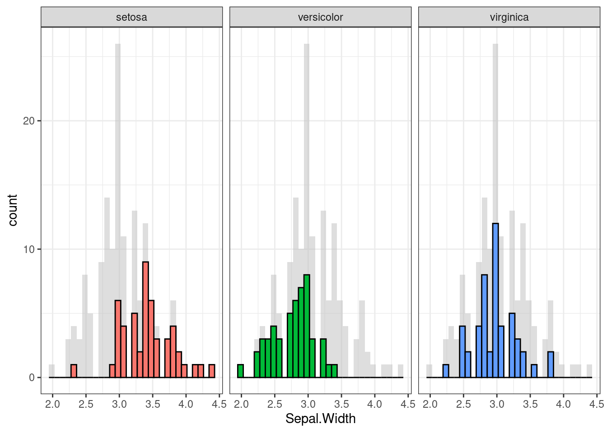
ggplot(d, aes(x = Sepal.Width, y = Sepal.Length, colour = Species)) +
geom_point(data = d_bg, colour = "grey", alpha = .2) +
geom_point() +
facet_wrap(~ Species) +
guides(colour = FALSE) +
theme_bw()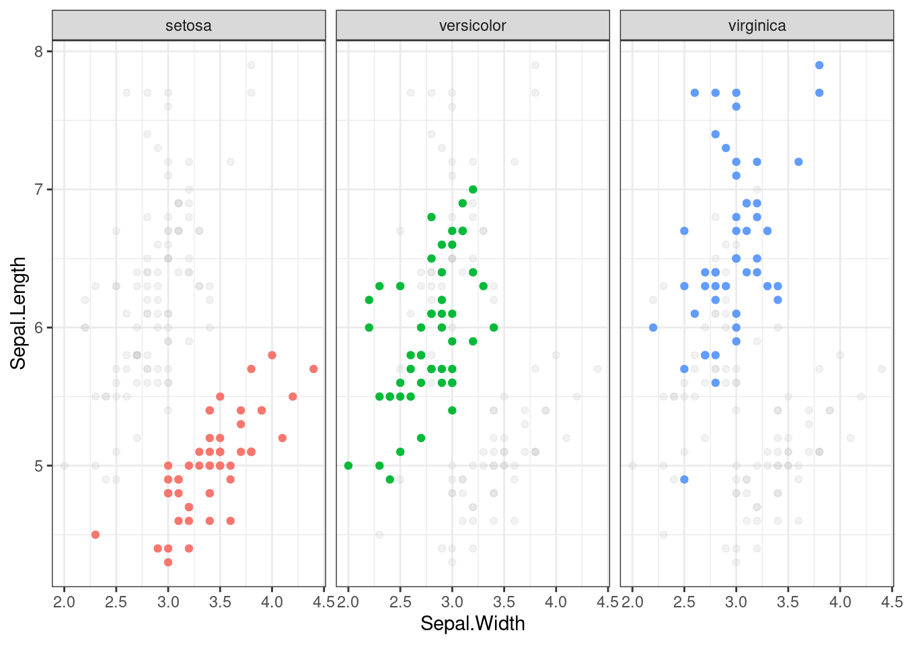
7.3.15 Flip plots
#cache=FALSE
if (!require('flipPlots')) remotes::install_github("Displayr/flipPlots"); library('flipPlots')
my.data = data.frame(Married = c("Yes","Yes", "Yes", "No", "No"),
Pet = c("Yes", "Yes", "No", "Yes", "No"),
Happy = c("Yes", "Yes", "Yes", "Yes", "No"),
freq = 5:1)
SankeyDiagram(my.data[, -4],
link.color = "Source",
weights = my.data$freq) SankeyDiagram(my.data[, -4],
link.color = "Source",
label.show.varname = FALSE,
weights = my.data$freq) 7.3.16 Waffle plots
From: ‘beeboileau’
# remotes::install_github("hrbrmstr/waffle")
if (!require('tidytuesdayR')) install.packages('tidytuesdayR'); library('tidytuesdayR')
if (!require('plyr')) install.packages('plyr'); library('plyr') # Need to load this before dplyr. The count() function used comes from plyr
if (!require('dplyr')) install.packages('dplyr'); library('dplyr')
if (!require('forcats')) install.packages('forcats'); library('forcats')
if (!require('ggplot2')) install.packages('ggplot2'); library('ggplot2')
if (!require('waffle')) install.packages("waffle", repos = "https://cinc.rud.is"); library('waffle')
if (!require('patchwork')) install.packages('patchwork'); library('patchwork')
if (!require('scales')) install.packages('scales'); library('scales')
if (!require('ggthemes')) install.packages('ggthemes'); library('ggthemes')
if (!require('viridis')) install.packages('viridis'); library('viridis')
if (!require('ggtext')) install.packages('ggtext'); library('ggtext')
#load data
tuesdata <- tidytuesdayR::tt_load(2020, week = 32)##
## Downloading file 1 of 2: `energy_types.csv`
## Downloading file 2 of 2: `country_totals.csv`energy_types <- tuesdata$energy_types
#clean up energy types
energy_types_clean <-
energy_types %>%
mutate(
country_name = case_when(
country == "CZ" ~ "Czech Republic",
country == "CY" ~ "Cyprus",
country == "MT" ~ "Malta",
country == "UK" ~ "UK",
country == "MK" ~ "Macedonia",
country == "TR" ~ "Turkey",
country == "BA" ~ "Bosnia and Herzegovina",
country == "GE" ~ "Georgia",
TRUE ~ country_name)
) %>%
mutate(
country_name = as.factor(country_name),
type = as.factor(type)
)
#-----waffle plot-----
#draw waffle plot
energy_composition <-
energy_types_clean %>%
janitor::clean_names() %>%
filter(level == "Level 1") %>%
mutate(
energy_type = fct_collapse(type,
renewable = c("Wind", "Hydro", "Solar", "Geothermal"),
nuclear = "Nuclear",
conventional_thermal = "Conventional thermal",
other = "Other")) %>%
dplyr::count(country_name, energy_type, wt = x2018) %>%
dplyr::group_by(country_name) %>%
dplyr::summarise(
total = sum(n),
energy_type,
country_name,
n
) %>%
dplyr::ungroup() %>%
mutate(
n = n/1000
) %>%
arrange(
desc(total),
desc(country_name)
) %>%
slice(1:40)
energy_composition %>%
ggplot(aes(fill = energy_type,
values = n)) +
geom_waffle(n_rows = 10, size = 0.33, color = "white", flip = TRUE, show.legend = FALSE)+
labs(
title = "the 10 European countries using most energy in 2018",
subtitle = "each box represents one kilo-watt hour; <br>
colours demarcate <b style = 'color:#31688EFF'>conventional thermal</b>,
<b style = 'color:#35B779FF'>renewable</b>, and
<b style = 'color:#FDE725FF'>nuclear</b> energy.",
caption = "data: Eurostat\nviz: @beeboileau"
)+
coord_equal()+
scale_fill_manual(values = c("#31688EFF", "#35B779FF", "#FDE725FF"))+
theme_enhance_waffle()+
facet_wrap(~fct_reorder(country_name, desc(total)), nrow = 1, strip.position = "bottom")+
theme_minimal(base_family = "NYTFranklin Light")+
theme(
plot.title = element_text(size = rel(2), margin = margin(20,0,0,0)),
plot.subtitle = element_markdown(size = rel(1), margin = margin(20,0,20,0)),
plot.margin = margin(10,10,10,10),
panel.grid = element_blank(),
axis.text.x = element_blank(),
legend.position = c(0.8, 0.8),
legend.title = element_blank()
)